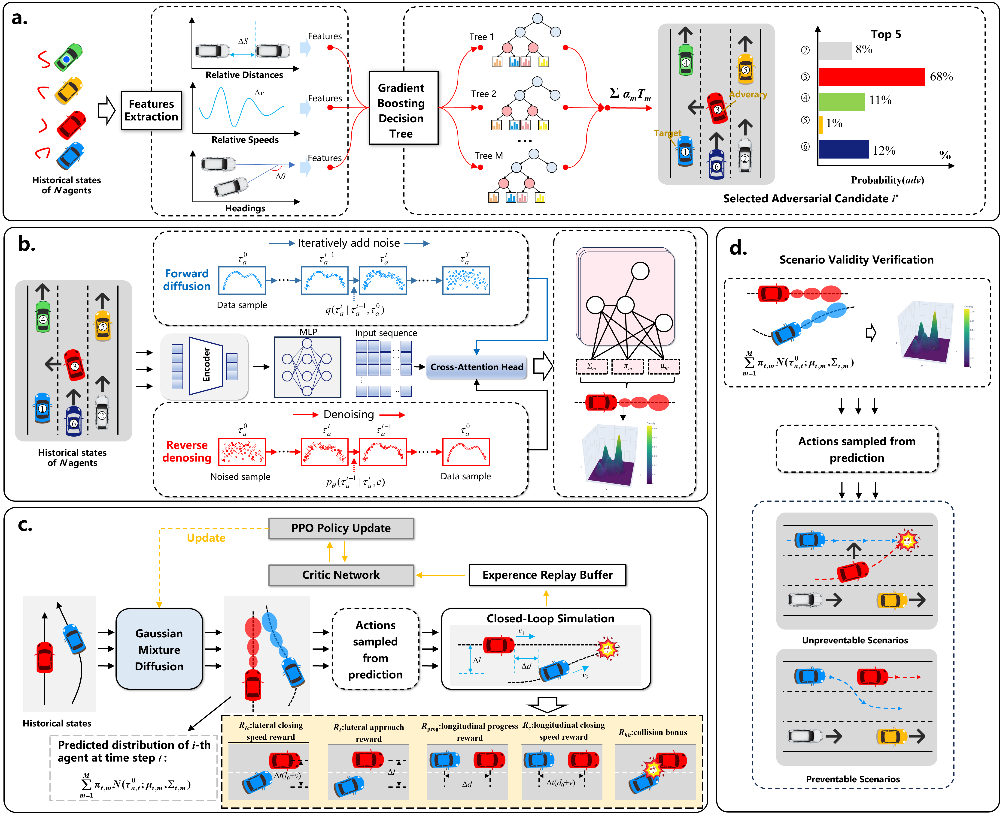
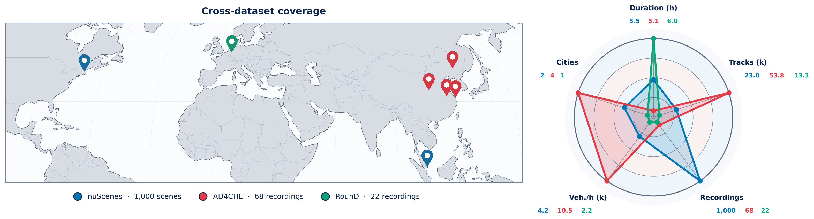
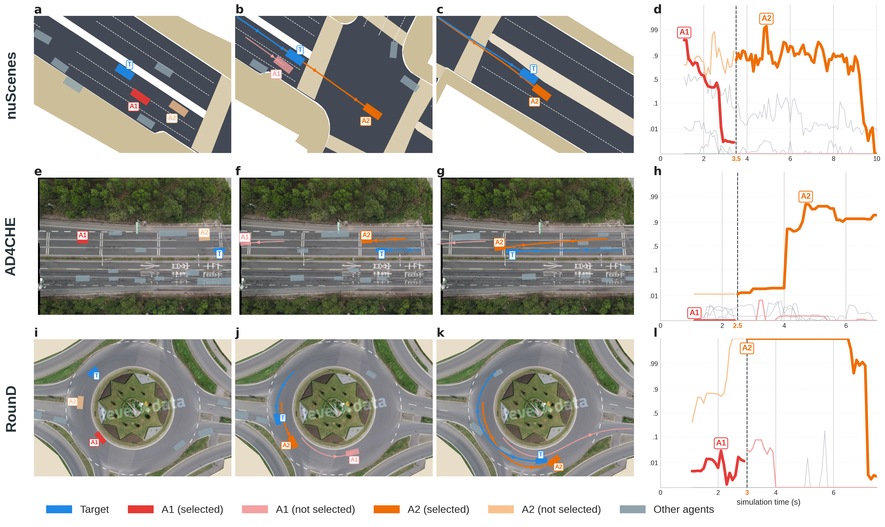
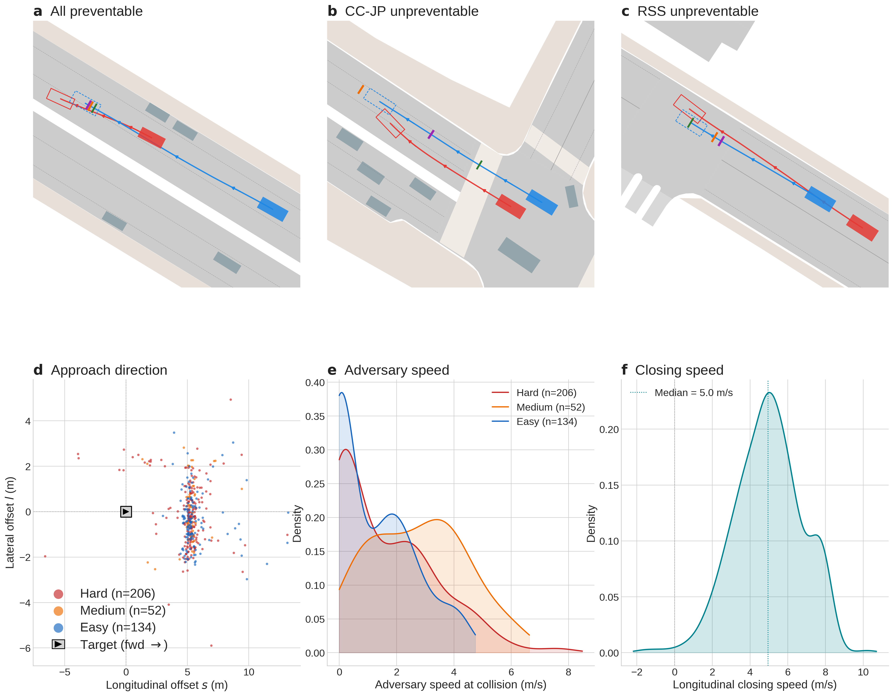

The CARS framework. (a) A context-aware selection module identifies the most threatening surrounding vehicle at every simulation step via a learned classifier on kinematic features, stabilised by a temporal confirmation gate. (b) A Gaussian Mixture Diffusion Model (GMDM) synthesises adversary trajectories conditioned on the map and the agent histories. (c) Closed-loop PPO fine-tuning steers the distribution toward severe interactions while the diffusion prior keeps the trajectories kinematically plausible. (d) A careful and competent driver model (CCDM) drawn from UN R157 checks each generated collision and discards scenarios that are not attributable to the target AD system.
CARS is evaluated across three datasets spanning three continents, three road topologies, and contrasting driving cultures.

Geographical distribution (left) and scale comparison (right) of the three evaluation datasets. nuScenes: Boston (USA) and Singapore, urban intersections and parking manoeuvres. AD4CHE: Changchun (China), multi-lane expressway traffic from an overhead drone. RounD: Neuweiler (Germany), four-arm signalised roundabout from a drone. The complementary profiles confirm that the three datasets jointly cover a broader evaluation space than any single dataset.
Rollout episodes replayed frame-by-frame from recorded HDF5 trajectories on the nuScenes Boston-Seaport map. All agents move exactly as recorded.
The same frozen CARS policy, trained only on nuScenes urban traffic, is applied without any retraining to two naturalistic drone datasets with contrasting scene geometries. Both videos are rendered on the original drone photo backgrounds provided with each dataset.
The adversary role dynamically transfers between agents mid-episode based on a learned classifier, maintaining a coherent threat across all three datasets without any retraining.

Adversary selection across datasets. Rows: nuScenes (top), AD4CHE (middle), RounD (bottom), each from a real rollout episode. Columns 1–3: bird's-eye-view snapshots at the start (t=0 s), first switch, and collision frame. The target is shown in blue, the currently active adversary in red (A1) and orange (A2), other agents in grey. Column 4: decision-tree adversarial probability Padv(t) for every candidate agent; the vertical dashed line marks the confirmation-gated switch step.
Each generated collision is evaluated under three CCDMs drawn from UN R157, so the attribution conclusion does not depend on a single driver model.

Main results on 408 nuScenes collision scenarios. (a–c) Responsibility attribution via CCDM check. Each panel shows the adversary (red) and target (blue) trajectories with the stop positions of the three reference driver models: FSM (primary), CC-JP (permissive human baseline), RSS (conservative formal baseline). (a) All three stop in time — fully preventable. (b) CC-JP fails while FSM and RSS still stop. (c) RSS fails while FSM and CC-JP still stop. FSM, the primary CCDM, covers both extremes. (d–f) Collision kinematics aggregated over all 408 scenarios: approach direction, adversary speed at contact, and longitudinal closing speed.
Benchmark comparison against existing generation methods, target-policy ablations, and unpreventable-mechanism analysis on the nuScenes validation split.
| Method | Responsibility Validity (%) ↑ | Severity Distribution (%) | Risk | Realism ↓ | ||||||
|---|---|---|---|---|---|---|---|---|---|---|
| FSM | CC-JP | RSS | Hard | Med | Easy | TTCmin (s) | BD+% | a95 (m/s²) | jerk95 (m/s³) | |
| CARS (Ours) | 98.8 | 84.3 | 96.6 | 52.4 | 13.4 | 34.2 | 1.47 | 12.3 | 2.26 | 15.64 |
| Bezier | 96.0 | 86.6 | 95.5 | 20.7 | 28.4 | 50.9 | 3.87 | 22.3 | 0.23 | 0.35 |
| STRIVE | 32.9 | 17.4 | 9.9 | 84.6 | 7.4 | 8.1 | 0.22 | 33.2 | 9.06 | 106.44 |
| SafeSim | 65.5 | 58.6 | 51.7 | 100.0 | 0.0 | 0.0 | 1.17 | 34.5 | 3.69 | 18.57 |
CARS is the only method that simultaneously achieves high responsibility attribution (98.8% FSM valid), adversary kinematics within production-vehicle bounds (a95=2.26 m/s², jerk95=15.64 m/s³), and balanced coverage across all three criticality tiers. Each baseline fails on a different axis: Bezier produces smooth but non-severe trajectories, STRIVE exceeds physical kinematic limits, and SafeSim collapses into degenerate Hard-only distributions.
| Mechanism | FSM (5) | CC-JP (64) | RSS (14) | Any (74) |
|---|---|---|---|---|
| BD+ at reaction boundary | 2 (40%) | 52 (81%) | 7 (50%) | 55 (74%) |
| CFS ≥ 0.9 | 4 (80%) | 0 (0%) | 0 (0%) | 4 (5%) |
| TTC < 1 s | 2 (40%) | 58 (91%) | 12 (86%) | 66 (89%) |
Trigger mechanisms for episodes that each CCDM cannot prevent (multiple causes per episode possible). Most unpreventable cases arise from encounter-geometry limits (short TTC, physical braking deficit) rather than CCDM-specific artefacts, confirming that the AD system under test should not be held at fault for them.
The same frozen CARS policy, evaluated under three CCDMs (FSM, CC-JP, RSS), on three datasets with contrasting scene geometries.
| Dataset | Scene geometry | Episodes | FSM valid% ↑ | CC-JP valid% ↑ | RSS valid% ↑ |
|---|---|---|---|---|---|
| nuScenes Training | urban intersections | 408 | 98.8 | 84.3 | 96.6 |
| AD4CHE | multi-lane highway | 470 | 94.5 | 69.8 | 92.1 |
| RounD | four-arm roundabout | 927 | 82.1 | 68.0 | 75.4 |
Valid% = fraction of collisions preventable by the CCDM (higher is better). AD4CHE and RounD numbers are from the same policy applied zero-shot, without any retraining or fine-tuning.